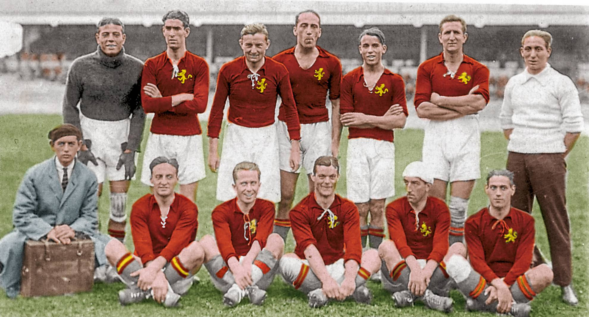

La Plata de Amberes (1920)
La medalla de plata obtenida por la selección española de fútbol en los Juegos Olímpicos de Amberes 1920 no solo supuso el debut internacional del equipo nacional, sino que cimentó la identidad competitiva del fútbol español durante décadas, conocida mundialmente como la "Furia Española".
- Debut Oficial: España debutó el 28 de agosto de 1920 en Bruselas con una victoria 1-0 ante Dinamarca, con el primer gol de la historia de la selección marcado por Patricio Arabolaza.
- Origen de la "Furia Española": El término surgió en ese torneo, influenciado por la contundencia física, el esfuerzo y la garra de los jugadores españoles, y popularizado por la mítica frase de José María Belauste: "¡Sabino, a mí el pelotón, que los arrollo!". Además, la prensa italiana acuñaría el término "furia rossa" para describir el estilo intenso de la selección.
- El Torneo y la Plata: Tras perder en cuartos de final contra Bélgica (la anfitriona y campeona), España se vio beneficiada por la descalificación de Checoslovaquia en la final, lo que le permitió disputar una "repesca" por la medalla de plata. España venció a Suecia y a los Países Bajos, asegurando la plata el 5 de septiembre de 1920.
- Leyendas en el Equipo: El equipo, dirigido por Paco Bru, contaba con figuras míticas del fútbol español como Ricardo Zamora (portero), José Samitier, Pichichi, Belauste y Patricio.
- La Identidad: Amberes 1920 consolidó un estilo de juego basado en la potencia, el coraje y la entrega, marcando el carácter de la selección nacional en sus primeros años.
